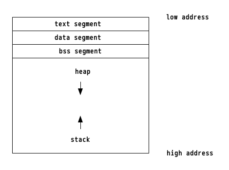
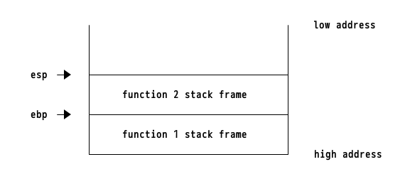

以下の文書はx86についての説明です。
メモリ配置
メモリ配置は以下の図のようになっています。
テキストセグメントには実行されるコード、データセグメントは初期化済みのグローバル変数、bssセグメントには初期化されていないグローバル変数、ヒープセグメントは、mallocなどで動的に確保される変数が配置されます。
今回はスタックに焦点をあてて説明していきます。
スタック
スタックとはメモリ上の領域の1つで、
- 引数の保存
- ローカル変数の保存
- 関数呼び出し
に利用されます。
スタックのアドレスは高値から低位に伸びていき、ebp, espレジスタにスタックのアドレスが保存されます。 以下の画像の様に、ebpは現在の関数のスタックの底を、espはスタックのトップを表しています。
これらのレジスタの値はpush, pop, call, retによって操作されます。
pushすると値がスタックに追加されたあとにespが4(x86_64の場合は8)だけデクリメントされ、popすると値がレジスタに読み込まれてespがインクリメントされます。
callの場合には、eipをリターンアドレスとしてpush, eipを呼び出し関数の先頭にセットします。 retすると、スタックからアドレスを取得してeipにセットします。
スタックフレーム
スタックフレームは以下の様になってます。
リターンアドレスはcall命令によるもので、ebpのアドレスがあるのは、Function prologueによるものです。
Function prologue
Function prologueは関数の先頭で行われる処理のことです。
実際には以下のような処理を行います。
push ebpでは、関数の終了時にebpを復元するために一旦スタックに退避しています。
mov ebp,espでは、現在のebpをespに代入することで、現在のスタックトップをベースにしています。
push ebp
mov ebp,esp
Function epilogue
Function epilogueは関数の最後に行われる処理のことです。 実際には以下のような処理が行われています。
leave
ret
このleaveという命令は、
mov esp ebp
pop ebp
と同等の処理を行うものです。
これらは、espをebpに戻して、スタックからebpの値を復元します。 retでは、前のeipの値をスタックからポップして元のコードに戻ります。
calling convention
スタックに引数を積む場合には、呼び出し規則(calling convention)と呼ばれる方法があります。 32bitバイナリでは、関数の引数は逆順にスタックに渡されます。 64bitバイナリでは、関数の引数を渡すのにスタックは使わず、レジスタを利用します。 渡される順番は以下の通りです。
- rdi
- rsi
- rdx
- r8
- r9
5個を超えるような場合には32bitバイナリと同様にスタックにプッシュされます。